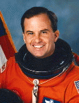

Lyndon B. Johnson Space Center
Houston, Texas 77058
|
National Aeronautics and Space Administration Lyndon B. Johnson Space Center Houston, Texas 77058 |
 |
Biographical Data |
||
Kevin P. Chilton (General, USAF)
NASA Astronaut (former)
PERSONAL DATA: Born November 3, 1954, in Los Angeles, California. Married; four children. He enjoys reading and all sports, including running, snow skiing, sailing, and softball. He also played the guitar in a rock and roll band.
EDUCATION: Graduated from St. Bernard High School, Playa del Rey, California, in 1972; received a bachelor of science degree in engineering sciences from the USAF Academy in 1976, and a master of science degree in mechanical engineering from Columbia University on a Guggenheim Fellowship in 1977.
ORGANIZATIONS: Member, Order of Daedalians, USAF Academy Association of Graduates, American Legion.
SPECIAL HONORS: Distinguished Graduate USAF Academy, and Guggenheim Fellowship recipient (1976). Commanders Trophy winner as top graduate from Air Force Undergraduate Pilot Training (1978). Secretary of the Air Force Leadership Award recipient as top graduate of Air Force Squadron Officer School for 1982. Recipient of the Liethen-Tittle Award as the outstanding test pilot of the USAF Test Pilot School Class 84A (1984). NASA "Top Fox" Flight Safety Award Winner (1991). Awarded the Distinguished Service Medal with an oak leaf cluster, Defense Superior Service Medal with two oak leaf clusters, Legion of Merit with oak leaf cluster, three NASA Space Flight Medals, NASA Exceptional Service Medal, and the NASA Outstanding Leadership Medal.
EXPERIENCE: Chilton received his Air Force commission from the USAF Academy in 1976, and then completed a masters degree in mechanical engineering on a Guggenheim Fellowship at Columbia University in 1977. In 1978, after receiving his wings at Williams Air Force Base, Arizona, he qualified in the RF-4 Phantom II and was assigned to the 15th Tactical Reconnaissance Squadron at Kadena Air Base, Japan. From 1978 until 1980, he served as a combat-ready pilot and instructor pilot in the RF-4 in Korea, Japan, and the Philippines. In 1981, he converted to the F-15 Eagle and was assigned to the 67th Tactical Fighter Squadron at Kadena Air Base in Japan as a squadron pilot. In 1982, Chilton attended the USAF Squadron Officer School at Maxwell Air Force Base, Alabama, and finished as the number one graduate for the year, receiving the Secretary of the Air Force Leadership Award. Subsequently assigned to the 9th and 7th Tactical Fighter Squadrons at Holloman Air Force Base, New Mexico, Chilton served as an F-15 squadron weapons officer, instructor pilot, and flight commander until 1984, when he was selected for the USAF Test Pilot School. Graduating number one in his class in 1984, Chilton was assigned to Eglin Air Force Base, Florida, where he conducted weapons and systems tests in all models of the F-15 and F-4. While a member of the 3247th Test Squadron, Chilton served as squadron safety officer, as chief of test and evaluation, and as squadron operations officer. In August 1987 he was assigned to NASA as an astronaut candidate.
NASA EXPERIENCE: Selected by NASA in June 1987, Chilton became an astronaut in August 1988, qualified for assignment as a pilot on Space Shuttle flight crews. Chilton held a variety of technical assignments. He served in the Mission Development Branch of the Astronaut Office in support of the Infrared Background Signature Survey ( IBSS) satellite, and the Orbital Maneuvering Vehicle (OMV) programs; was the Astronaut Office T-38 safety officer; was leader of the Astronaut Support Personnel team at the Kennedy Space Center; and was lead spacecraft communicator (CAPCOM) for several Shuttle flights. Chilton also served as Deputy Program Manager for the International Space Station Program.
A veteran of three space flights, Chilton has logged over 704 hours in space. He was the pilot on STS-49 in 1992 and STS-59 in 1994, and was the commander of STS-76 in 1996.
Chilton left NASA in 1998. Since then he has served on the Air Force Space Command Staff, the Air Staff, the Joint Staff, and commanded the 9 th Reconnaissance Wing, 8 th Air Force, Joint Functional Component Command for Space and Global Strike and Air Force Space Command. Currently he serves as Commander, United States Strategic Command, Offutt Air Force Base, Nebraska. He is responsible for the global command and control of U.S. strategic forces to meet decisive national security objectives.
SPACE FLIGHT EXPERIENCE: STS-49, May 7-16, 1992, was the maiden voyage of Space Shuttle Endeavour. During the mission, the crew conducted the initial test flight of Endeavour, performed a record four EVA’s (space walks) to retrieve, repair and deploy the International Telecommunications Satellite (INTELSAT), and to demonstrate and evaluate numerous EVA tasks to be used for the assembly of Space Station Freedom. Additionally, a variety of medical, scientific and operational tests were conducted throughout the mission. STS-49 logged 213 hours in space and 141 Earth orbits prior to landing at Edwards Air Force Base, California, where the crew conducted the first test of the Endeavour’s drag chute.
STS -59, the Space Radar Laboratory (SRL) mission, April 9-20, 1994, was launched aboard Space Shuttle Endeavour. SRL consisted of three large radars, SIR-C/X-SAR (Shuttle Imaging Radar C/X-Band Synthetic Aperture Radar), and a carbon monoxide sensor that were used to enhance studies of the Earth's surface and atmosphere. The imaging radars operated in three frequencies and four polarizations. This multispectral capability of the radars provided information about the Earth's surface over a wide range of scales not discernible with previous single-frequency experiments. The carbon monoxide sensor ( MAPS) used gas filter radiometry to measure the global distribution of CO in the troposphere. Real-time crew observations of surface phenomena and climatic conditions augmented with over 14,000 photographs aided investigators in interpretation and calibration of the data. The mission concluded with a landing at Edwards AFB after orbiting the Earth 183 times in 269 hours.
Chilton commanded STS-76, the third docking mission to the Russian space station Mir, which launched on March 22, 1996 with a crew of six aboard Atlantis. Following rendezvous and docking with Mir, transfer of a NASA astronaut to Mir for a five month stay was accomplished to begin a continuous presence of U.S. astronauts aboard Mir for the next two-year period. The crew also transferred 4800 pounds of science and mission hardware, food, water and air to Mir and returned over 1100 pounds of U.S. and ESA science and Russian hardware. The first spacewalk from the Shuttle while docked to Mir was conducted. Experiment packages were transferred from the Shuttle and mounted on the Mir docking module to detect and assess debris and contamination in a space station environment. The Spacehab module carried in the Shuttle payload bay was utilized extensively for transfer and return stowage of logistics and science and also carried Biorack, a small multipurpose laboratory used during this mission for research of plant and animal cellular function. This mission was also the first flight of Kidsat, an electronic camera controlled by classroom students via a Ku-band link between JSC Mission Control and the Shuttle, which used digitized photography from the Shuttle for science and education. Following 145 orbits of the Earth, Atlantis landed with a crew of five at Edwards Air Force Base in California on March 31, 1996, 221 hours after liftoff.
MARCH 2008
This is the only version available from NASA. Updates must be sought direct from the above named individual.
{kind=link}